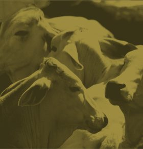

Ubicacion
Carretera federal El seco/ Zacatepec km 44.5
Horario en en instalciones
Lun-Vie 8:00 - 19:00
Llamanos hoy
(249)105 3135
PRODUCTOS
ALIMENTOS BALANCEADOS PARA RUMIANTES

Los rumiantes necesitan alimentos constituidos por carbohidratos, proteínas, grasas, vitaminas y minerales para estar sanos, tener energía, crecer y reproducirse.
Engorda Borrego
Conozca las presentaciones de nuestros productos relacionados con la alimentación eficiente para rumiantes, así como aquellos factores que pueden afectar el uso eficiente de un programa de alimentación.

A la llegada de los borregos al corral de engorda de un periodo de adaptación de por lo menos 7 días ofreciendo lastres de buena calidad. El cambio de los lastres al alimento engorda borrego intensiva debe ser gradual sustituyendo poco a poco el lastre por el alimento de borregos
Recomendaciones:
Suministrar del destete, proporcionar a libre acceso.
Ingredientes:
Cereales molidos, pastas de oleaginosas, vitaminas, aminoacidos y minerales.

Un buen manejo del aprovechamiento de los pastizales para el ganado le permitirá:
• Prevenir el sobrepastoreo y la perdida de suelo por erosión.
• Asegurar la máxima producción de forraje de los campos.

El pastizal puede cercarse o vallarse, lo que permite que los animales estén confinados en una zona mientras los pastos vecinos descansan.
De esta forma el prado puede pastarse de 1 a 2 semanas y dejarlo después descansar varias semanas para permitir que crezca de nuevo el pasto. Esto constituye la rotación del pastizal:

Si los animales no obtienen suficiente cantidad de cada nutriente, disminuye su rendimiento y pueden morir por un proceso conocido como enfermedad carencial.
Si un animal no ingiere en su alimentación suficientes grasas, proteínas o carbohidratos, no se desarrolla bien, disminuye su producción de leche y ello afecta sus crías.
La carencia de minerales origina problemas, como falta de celo, crecimiento insuficiente de los huesos y pérdidas de pelo o lana. Por otra parte, la falta de vitaminas esenciales puede causar problemas, como ceguera e inflamaciones articulares.


Productos
En agrorsa contamos con sub productos agropecuarios ideales para complemetar la dieta de su ganado al incluir un perfil nutricional para cada etapa de desarrollo.


Si requiere informacion a cerca de nuestros avisos de privacidad por favor escribanos a privacidad@agrorsa.com.mx y con gusto le brindaremos la información solicitada en un documento ejecutivo.
Copyright© AGRORSA 2017.Todos los derechos reservados.